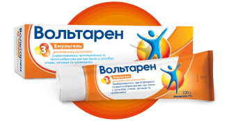
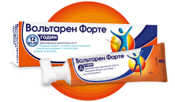

ВоспалениеПовреждения мягких тканейБоли в суставах
Найти подходящее лекарственное средство
Узнайте, как продукты Вольтарен обеспечивают обезболивание,
ориентируясь на его источник, чтобы вы могли вновь открыть для себя радость движения.
Вольтарен, который подходит именно Вам

Вольтарен Эмульгель
При местном лечение боли и воспаления суставов, мышц, связок и сухожилий
ревматического или травматического происхождения

Вольтарен Форте
При лечении сильной боли в суставах и спине до 12 часов
Вопросы и ответы
Вольтарен Эмульгель – это лекарственный препарат, содержащий в качестве активного
вещества
диклофенака диэтиламин (нестероидное противовоспалительное средство).
Диклофенака диэтиламин
всасывается через кожу и облегчает боль и воспаление в месте его возникновения. Этим он
отличается от разогревающих и охлаждающих мазей, активные вещества которых стимулируют
нервы в
коже, в результате чего вы чувствуете тепло или холод. Вольтарен Эмульгель обладает
нежирной
текстурой и слабым запахом.
Эмульгель - это особая лекарственная форма, благодаря которой активное вещество препарата
хорошо всасывается через кожу и попадает к больному участку. Эмульгель сочетает в себе
свойства эмульсии и геля, осуществляющие охлаждающее действие на кожу.
Аллергия на диклофенака диэтиламин, пропиленгликоль, изопропиловый спирт и другие
компоненты препарата
Последний триместр беременности
наличие в прошлом приступов астмы или аллергических реакций, крапивницы, острого
ринита после приема аспирина или других НПВС
Спросите врача или фармацевта, можно ли вам применять Вольтарен Эмульгель, если у вас
есть другие заболевания или вы принимаете любые другие лекарства. Перед началом
применения препарата Вольтарен Эмульгель обязательно прочитайте его инструкцию по
применению.
Вольтарен Эмульгель следует наносить только на неповрежденную кожу, избегая попадания на
открытые раны, инфицированные участки кожи и другие места, где кожа выглядит
ненормально.
Вольтарен Эмульгель не следует наносить под водонепроницаемые и воздухонепроницаемые
повязки. Допускается наложение дышащей повязки. Проконсультируйтесь с врачом или
фармацевтом по поводу остальных оговорок при применении препаратов Вольтарен.